小豆島の洞窟寺院巡り
石門洞
さて、小豆島の洞窟巡りもいよいよ後半戦である。
次に向かったのは石門洞というところ。
何やらネーミングからして只者でない感を大いに出しているが、こんな奇岩があるのだ。
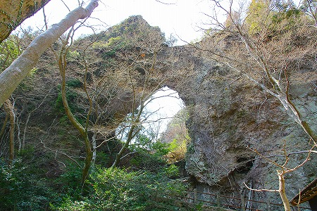
岩壁の真ん中がごっそり抜け落ちて、まるで石の門のような形状になっているのだ。
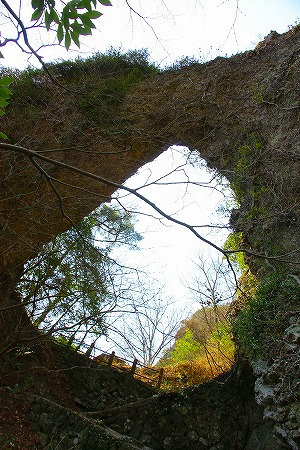
勿論穴の上部には登れないだろうが、穴の中は潜れるようになっている。
行きませんでしたとも。いや、行けませんでした。
石門に向かわなかったのは勿論疲れていたからなのだが、それと同時にその先にこんな素敵な光景が待っていたからなのだ。
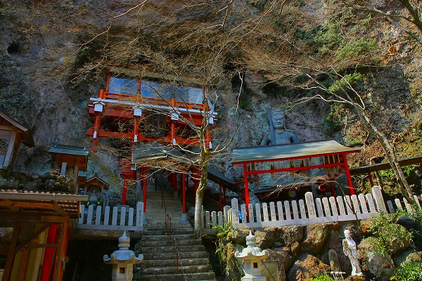
イイっしょ？イイっしょ？
岩壁に埋め込まれたかのような赤い鉄筋コンクリート造のお堂と巨大な不動明王像。
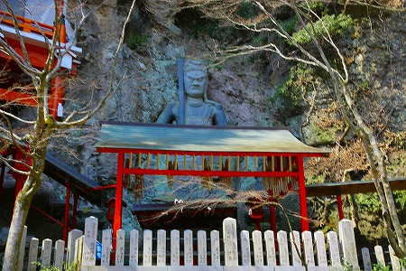
特に赤いお堂はチャーミングだ。
お堂、とは言ったものの、洞窟の正面だけを塞いだだけのいたってシンプルな構造物なのだ。
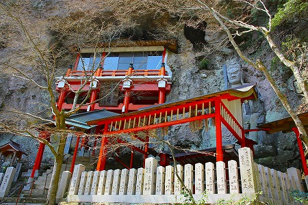
昔，建築史の授業で洞窟の入り口を塞いだのが建築の始まりであるといったような講義を聴いた。
この覆い堂はまさにその原初的な状況を近代的な工法で再構築した現代版横穴式住居といえなくもない。
あるいは20世紀の投入堂か。
いずれにせよ、オールドスクールな洞窟寺院と近代の工法が出会って不思議な光景を生み出している。
それこそが小豆島の洞窟寺院の醍醐味と見た。
不動サマの直下にあったコンクリ像。
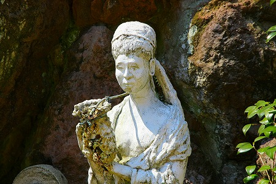
背後の岩壁から伝ってきた水を手に持った壷に流していたのだろう。
今では水も枯れ、壷も崩壊状態だ。
というわけで洞窟に向かう。
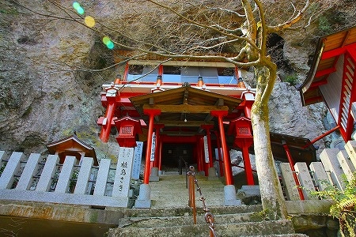
横には不動明王が物凄い存在感を放って鎮座している。
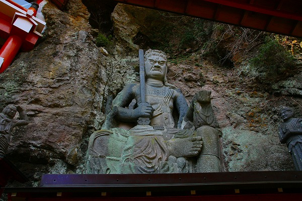
恐らく崖を削った磨崖仏なのだろうが、立体感がハンパない。
まるで他の場所で彫刻してきたものを運び込んだようにも見える。
磨崖仏としてはかなりレベルの高い彫像だと思うのだが、あまり話題にならないっすね。
で、洞窟。
石段の手摺が鎖になっていて行場気分を盛上げてくれる。
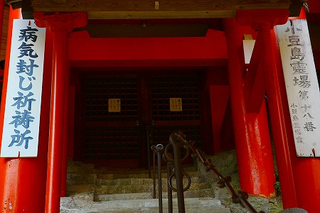
扉を開けるとすぐ右折してさらに石段は続く。おそらくこの階段の幅がこの洞窟の奥行きの全てなのだろう。
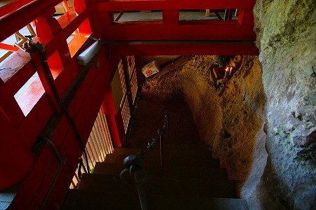
階段を登ると、意外と広いスペースだった。
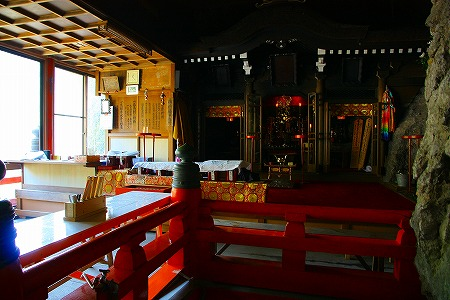
窓際の方は若干物置っぽい感じ。
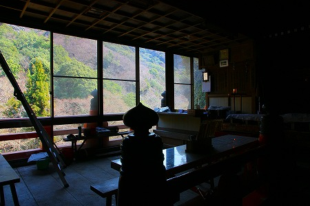
かつてこの洞窟で弘法大師が修行したというだけに奉納物も多い。
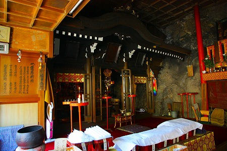
岩壁には不動明王が祀られていた。
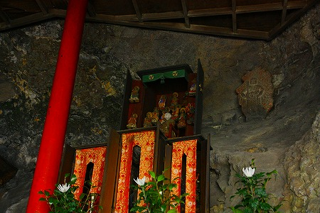
その手前には厨子に納まった弘法大師が。
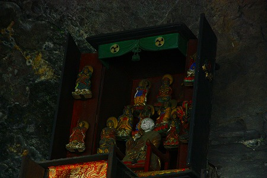
帰りに扉を閉めようとしたらこんな貼り紙が。
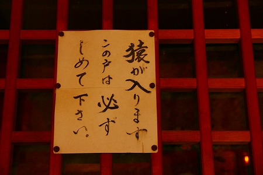
ホント小豆島って猿が多いものなあ。
半分人工、半分自然の不思議な空間だった。
次の洞窟へＧＯ！
小豆島の洞窟寺院巡り
珍寺大道場 HOME